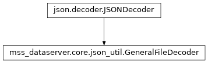

GeneralFileDecoder¶
-
class
mss_dataserver.core.json_util.GeneralFileDecoder(**kwarg)[source]¶ Bases:
json.decoder.JSONDecoderA JSON decoder for the deserialization of general data.
- Parameters
**kwargs (keyword argument) – Keyword arguments passed to
json.encoder.JSONDecoder.- Variables
version (
mss_dataserver.core.util) – The version of the file decoder.
Properties¶
version
Methods¶
|
|
|
Convert a dictionary to objects. |
Convert a numpy ndarray dictionary. |
|
Convert a UTCDateTime dictionary. |
|
Convert a Version dictionary. |
|
|
Return the Python representation of |
|
Decode a tuple. |
|
Decode a JSON document from |
Inheritence diagram¶
